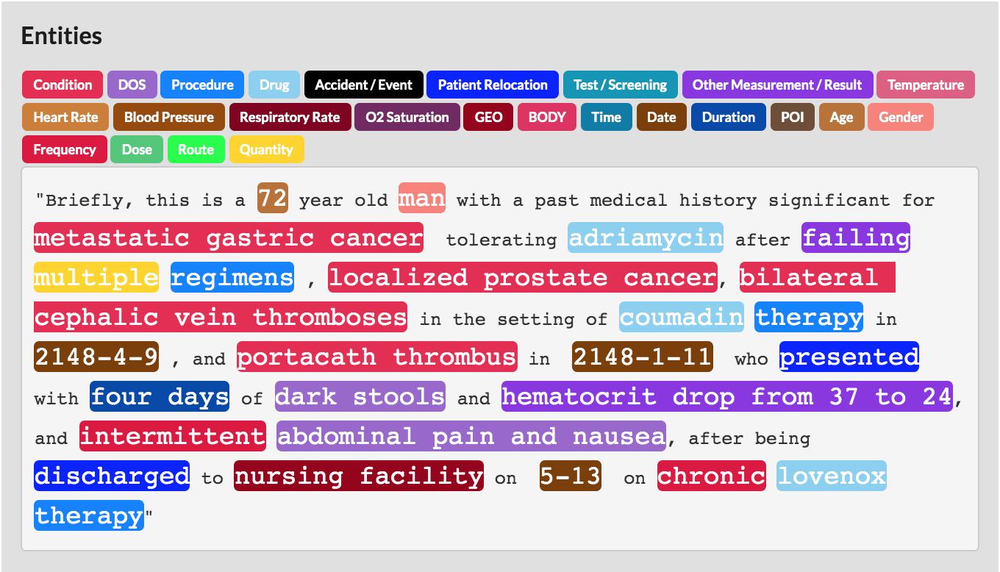

Whatever the field this bottom up approach will identify any named entity specific to the problem at hand. Even highly specialized medical data can be parsed through research and specialized models.
This Machine Learning solution starts from the ground up. By identifying important text elements models are able to extract information from even the most specialized data sets.
As the model learns from annotations it can be used to pre-label data and speed up annotation process up to 4x.
Models are constantly tracking performance for each defined entity. If the model struggles with certain elements they can be excluded from predictions.
Models will instantly identify useful entities and parse them into usable information. Extraction tool can be run on entire datasets to uncover further insights from raw text.
Identify numeric entities and instantly see distributions in your dataset.
Fits in easily with Dataturks annotation services. Simply add one click to the pipeline to get automated annotation, metric tracking, and a production ready models.